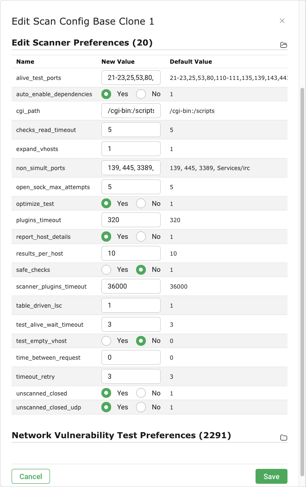

19 Часто задаваемые вопросы¶
19.1 Почему процесс сканирования такой медленный?¶
Производительность сканирования зависит от различных аспектов.
Одновременно было активировано несколько сканеров портов.
Если используется отдельный кабель, выберите только один порт сканера встроенного VT. Сканеры портов (см. главу 9.9.2). ВТ Пинг-хост еще можно активировать.
Сканирование неиспользуемых IP-адресов занимает очень много времени.
На первом этапе для каждого IP-адреса определяется наличие активной системы или ее отсутствие. В противном случае этот IP-адрес не будет сканироваться. Брандмауэры и другие системы могут обеспечить успешное обнаружение. ВТ Пинг-хост (1.3.6.1.4.1.25623.1.0.100315) в семействе VT Сканеры портов предлагает тонкую настройку обнаружения.
В результате портов было выполнено регулирование портов, или был выбран сканер портов UDP.
Дополнительную информацию см. в главах. 16.2.1.2 и 16.2.1.2.1.
19.2 Что влияет на мощность сканирования?¶
Производительность обработки – количество сканируемых IP-адресов за 24 часа – зависит от модели устройства (см. главу) 3). Однако значения, указанные для расчетной мощности сканирования, можно рассматривать только как ориентировочные, поскольку на мощность сканирования влияет множество факторов.
На производительность сканирования влияют следующие факторы:
- Сложность используемой конфигурации сканирования
За то же время можно выполнить гораздо больше сканирований на обнаружение, чем на сканирование уязвимостей. Дополнительную информацию о конфигурациях сканирования см. в главе 9.9.
- Использование прибора за пределами его технических характеристик
Запуск слишком большого количества сканирований или сканирование слишком большого количества объектов одновременно может привести к проблемам с производительностью.
- Производительность сетевой инфраструктуры и целевой системы (систем)
Если системы медленно отвечают на сетевые запросы, процесс сканирования будет медленнее.
- Тип сканируемой целевой системы(ов)
Тип определяет, какие и сколько тестов на уязвимости выполняются во время сканирования. Больше тестов на уязвимости обычно означает более медленное сканирование.
Некоторые механизмы позволяют увеличить использование ресурсов, что может влиять на производительность, например, сканирование виртуальных хостов (vhosts) и сканирование веб-серверов с включенным кэшированием CGI. Дополнительная информация о дополнительных условиях к настоящим условиям, приведенным в см. во главе 9.9.
- Использование устройства параллельно во время сканирования
Если выполняются другие ресурсоемкие операции (например, обновление ленты, создание больших отчетов), для сканирования доступно меньше системных ресурсов.
- Использование датчиков
Использование датчиков может увеличить количество сканируемых IP-адресов за 24 часа.
19.3 Почему услуга/продукт не обнаруживается?¶
Цель не определена как онлайн/достижимая.
- Решение(я):
Исправьте настройку сети/маршрутизацию к цели.
Обновите конфигурацию критериев/теста, чтобы обнаружить цель как живую (см. главу 9.2.1).
Убедитесь, что внешний адаптер включает все виртуальные машины встроенной виртуальной машины. Сканеры портов: * Nmap (обертка NASL) (OID: 1.3.6.1.4.1.25623.1.0.14259) * Пинг-хост (OID: 1.3.6.1.4.1.25623.1.0.100315)
Проверьте и удалите любое сетевое устройство (брандмауэр, IDS/IPS, WAF и т. д.) между сканером и Фондом или любыми механизмами безопасности для самой цели. Добавьте в белый список IP-адрес сканера.
Служба/продукт работает на определенном порту, не включенном в список портов.
- Решение(я):
Создайте подходящий список портов (см. главу 9.7). Это особенно важно для портов UDP.
Доступен поиск VT по услугам/продуктам, но услуги/продукт обнаружены не случайно.
- Решение(я):
Исправьте настройку сети/маршрутизацию к цели.
Обновите конфигурацию критериев/теста, чтобы обнаружить цель как живую (см. главу 9.2.1).
Проверьте и удалите любое сетевое устройство (брандмауэр, IDS/IPS, WAF и т. д.) между сканером и Фондом или любыми механизмами безопасности для самой цели. Добавьте в белый список IP-адрес сканера.
Создайте подходящий список портов (см. главу 9.7). Это особенно важно для портов UDP.
Если приведенные выше решения не помогли, обратитесь в Команда поддержки Ак Шумкар и предоставить дополнительную информацию об услуге/продукте (название продукта, конкретная используемая версия и т. д.).
Цель нестабильна/медленно реагирует во время сканирования.
- Решение(я):
Опустите одновременно выполняемые VT (см. главу 9.2.2).
Обновите услугу/продукт до более новой версии (например, чтобы исправить возникшие ошибки).
Назначьте целевому объекту больше ресурсов (ЦП, ОЗУ и т. д.), чтобы сделать его более стабильным во время сканирования.
19.4 Почему уязвимость не обнаружена?¶
Затронутая услуга/продукт вообще не обнаружена.
- Решение(я):
См. главу 19.3.
Услуга/продукт была обнаружена, но извлечение версии было невозможно.
- Решение(я):
Выполните сканирование с аутентификацией (см. главу 9.3).
Если приведенные выше решения не помогли, обратитесь в Команда поддержки Ак Шумкар и предоставить дополнительную информацию об услуге/продукте (название продукта, конкретная используемая версия и т. д.).
Обнаружена только проверка версии с более низким качеством (QoD) и уязвимостью по умолчанию не отображается.
Если было выполнено сканирование с проверкой подлинности, вход в систему не удался.
- Решение(я):
Проверьте правильность используемых учетных данных.
Убедитесь, что пользователь не заблокирован.
Убедитесь, что пользователю разрешено войти в систему.
Если приведенные выше решения не помогли, обратитесь в Команда поддержки Ак Шумкар и предоставить дополнительную информацию об услуге/продукте (название продукта, конкретная используемая версия и т. д.).
Сама служба/продукт вышла из строя или перестала отвечать во время сканирования.
- Решение(я):
Опустите одновременно выполняемые VT (см. главу 9.2.2).
Обновите услугу/продукт до более новой версии (например, чтобы исправить возникшие ошибки).
Назначьте целевому объекту больше ресурсов (ЦП, ОЗУ и т. д.), чтобы сделать его более стабильным во время сканирования.
Уязвимость была обнаружена совсем недавно, а VT для нее пока нет.
- Решение(я):
Свяжитесь с Команда поддержки Ак Шумкар и спросите новый ВТ или запланировали ли он уже.
Конкретное обнаружение устарело.
- Решение(я):
Свяжитесь с Команда поддержки Ак Шумкар.
19.5 Почему результаты для одной и той же цели различаются при нескольких последовательных сканированиях?¶
Результаты последовательных сканирований могут отличаться по следующим причинам:
Произошла потеря соединения из-за ненадежных сетевых соединений (между хостом сканера и целью).
Сетевое соединение или оборудование (между хостом сканера и объектом) были перегружены.
Перегруженный целевой хост и/или служба перестали отвечать.
«Хрупкие» протоколы (например, протокол удаленного рабочего стола) не всегда реагируют должным образом.
Предыдущий запрос на проверку/атаку привел к тому, что служба не отвечала в течение короткого периода времени.
Хотя сканер пытается уменьшить возникновение таких ситуаций с помощью внутренних процедур повторных попыток, их нельзя полностью исключить.
19.6 Почему невозможно редактировать конфигурации сканирования, списки портов, политики соответствия или форматы отчетов?¶
Конфигурации сканирования, списки портов, политики соответствия и форматы отчетов «Ак Шумкар» (далее «объекты») распространяются через фид. Эти объекты должны принадлежать пользователю, владельцу импорта фида. Объекты загружаются и обновляются во время обновления фида, если был установлен владелец импорта фида.
Объекты нельзя редактировать. Это сделано для того, чтобы объекты функционировали так, как задумано «Ак Шумкар».
19.7 Почему невозможно удалить конфигурации сканирования, списки портов, политики соответствия или форматы отчетов?¶
Конфигурации сканирования, списки портов, политики соответствия и форматы отчетов «Ак Шумкар» (далее «объекты») распространяются через фид. Эти объекты должны принадлежать пользователю, владельцу импорта фида. Объекты загружаются и обновляются во время обновления фида, если был установлен владелец импорта фида.
Удалять объекты могут только владелец импорта ленты, суперадминистратор и пользователи, получившие соответствующие права.
Если объекты удалены, они будут загружены снова при следующем обновлении фида. Если объекты не должны загружаться, необходимо отключить владельца импорта фида.
19.8 Почему в сканируемой встроенной системе появляется окно VNC?¶
При открытии порта 5900 или настройке порта VNC в сканируемой встроенной системе появляется тестовое окно с предложением разрешить подключение. Это наблюдалось для UltraVNC версии 1.0.2.
Решение: выделить порт 5900 или другие настроенные порты VNC в соответствии с требованиями. В качестве альтернативы может помочь обновление до более новой версии UltraVNC (UltraVNC 1.0.9.6.1 использует только мобильные сообщения для информационных пользователей).
19.9 Почему сканирование вызывает срабатывание сигналов тревоги в других инструментах безопасности?¶
Для многих тестов на уязвимости применяется поведение реальных атак. Даже если реальной атаки не произойдет, некоторые инструменты безопасности подадут сигнал тревоги.
Известный пример:
Symantec сообщает об атаках, связанных с CVE-2009-3103, если VT Microsoft Windows SMB2 «_Smb2ValidateProviderCallback()» Уязвимость удаленного выполнения кода (1.3.6.1.4.1.25623.1.0.100283) результат. Этот результат VT только в том случае, если переключатель Нет выбран для Safe_checks в настройках сканера (см. Рис. 19.1). В противном случае это может повлиять на целевую систему.


Рис. 19.1 Отключение предпочтений сканера Safe_checks¶
19.10 Как можно выполнить сброс устройства к заводским настройкам?¶
Сброс к заводским настройкам можно выполнить для безопасного удаления пользовательских данных с устройства.
Примечание
Свяжитесь с Команда поддержки Ак Шумкар чтобы получить подробные инструкции по выполнению сброса настроек.
19.11 Почему после сброса настроек не работает ни обновление канала, ни обновление ГСН?¶
При сбросе настроек удаляется вся система, включая ключ подписки AK-SHUMKAR ENTERPRISE FEED. Подписка на ключ обязательна для обновленных каналов и обновленных ГОС.
Повторно активируйте ключ подписки:
Резервный ключ поставляется с каждым устройством (см. главу 6.1.1). Используйте этот ключ для повторной активации устройства. Активация описана в руководстве по настройке соответствующей модели устройства (см. главу 4).
Обновите систему до актуальной версии:
В зависимости от версии ГСН необходимо выполнить соответствующую процедуру обновления.
19.12 Как можно восстановить старую резервную копию или переданный образ?¶
Восстановить можно только резервные копии и передачи изображений, созданные с помощью используемой на данный момент версии GOS или предыдущей версии GOS. Для GOS 24.10 можно импортировать только резервные копии и изображения из GOS 24.10 или GOS 22.04. Если необходимо импортировать более старый резервный или технический образ, например из GOS 21.04, необходимо использовать устройство с маркой GOS.
Резервное копирование и передача изображений из программы GOS, более новая, чем используемая в данный момент версия GOS, а также не применяется. Если необходимо импортировать более новую резервную копию или изображение для передачи, необходимо использовать устройство с соответствующим статусом GOS.
Если есть вопросы, обращайтесь в Команда поддержки Ак Шумкар.

19.14 Как можно проверить статус GMP без использования учетных данных?¶
Создал SSH-соединение с телефоном через командный текст, используя пользователя GMP:
сш GMP@<прибор>
Заменять <устройство> с IP-адресом или DNS-именем устройства.
Примечание
Приглашение к вводу не отображается, но команду, тем не менее, можно ввести.
Входить
<получить_версию/>.→ Если используется GMP, данные на выходе должны иметь такой же вид.
<get_version_response статус="200" status_text="OK"><version>8.0</version></get_version_response>.
19.15 Что делать, если самопроверка показывает «RAID-массив поврежден»?¶
В моделях устройств АК-ШУМКАР 6500/6400/5400/5300 в качестве программного RAID используется RAID (Redundant Array of Independent Disks) 6. RAID — это технология виртуализации хранения данных, которая объединяет несколько компонентов жесткого диска (HDD) в один или несколько логических блоков для сохранения данных. Для RAID 6 требуется как минимум 4 жестких диска для обеспечения RAID и, следовательно, резервность данных. Само устройство сохранит работу, если из строя дойдут 2 жестких диска.
Если один или несколько жестких дисков выйдут из строя, ГСН отобразит представление самопроверки. Рейд Множество деградировавший с подсказкой Заменять тот неуспешный диск, и Проверять для система честность статус с подсказкой система честность может быть находится под угрозой исчезновения. Пожалуйста контакт тот поддерживать.
Проверка целостности не удалась из-за неисправности жестких дисков.
Неисправные жесткие диски необходимо заменить, RAID — отремонтировать. Свяжитесь с Команда поддержки Ак Шумкар за помощь.